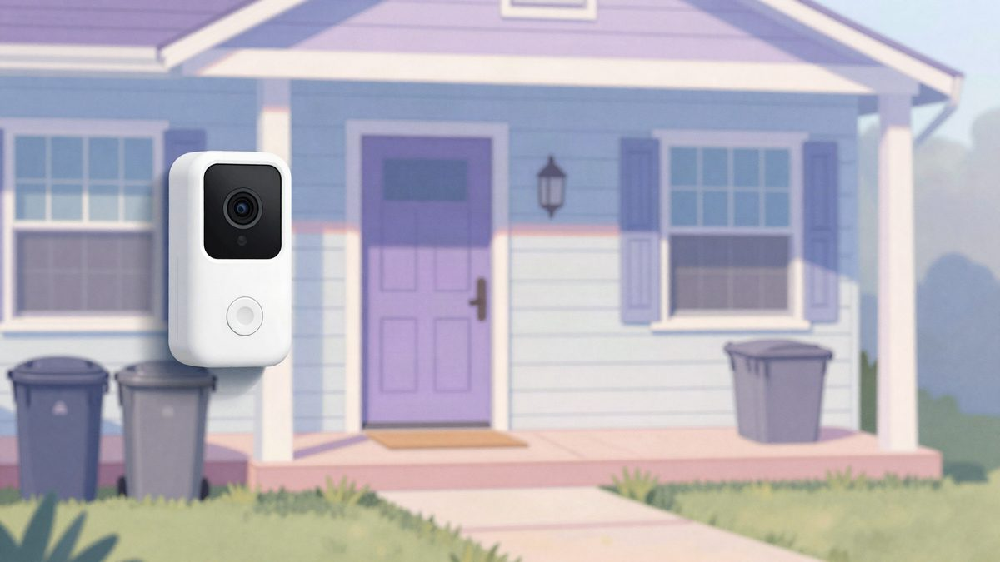

Ring ima manje poznate aplikacije koje stanodavcima broje goste i označavaju kršenja kućnog reda

U trgovini aplikacijama za Ring kamere ima aplikacija trećih strana koje broje ljude u prostoru, bilježe dolaske radnika i javljaju moguća kršenja kućnog reda. Većina zahtijeva Ring plan uz dodatnih 3 do 10 dolara mjesečno. Snimke često nemaju kontekst, a zakonitost korištenja ovisi o lokaciji i načinu primjene.
Ring kamere više ne služe samo za sigurnost. U trgovini aplikacijama za Ring ima aplikacija trećih strana koje analiziraju snimke i stanodavcima, poslodavcima i vlasnicima kuća javljaju koliko je ljudi bilo u prostoru, tko je došao i što se dogodilo. Većina ih traži postojeću Ring pretplatu uz dodatnu mjesečnu naknadu, obično od nekoliko do oko 10 dolara.
ZoneGauge košta 5 dolara mjesečno i broji ljude u nadziranom prostoru. Stanodavci ga mogu koristiti za uočavanje prenapučenosti ili okupljanja većih od dopuštenog broja osoba. GuardCat košta 8 dolara mjesečno i sažima odjave gostiju, dolaske čistača i moguća kršenja kućnog reda. Automatski alarm ipak ne dokazuje da je netko prekršio pravilo, jer snimci često nemaju kontekst potreban da bi se uobičajena aktivnost razlikovala od stvarnog prekršaja. Airbnb inače zabranjuje unutarnje sigurnosne kamere u oglasima, pa ih domaćini ne smiju koristiti za nadzor gostiju unutar smještaja.
Nadzor radnika i okoliša
ProofClock i TimeStack ciljaju građevinu i prijevoz tereta. Bilježe kada radnici stignu na lokaciju i koliko dugo ostanu, a neke izrađuju i izvještaje o aktivnostima, dostupnosti sustava i ugovorenim razinama usluge. Snimka ipak ne pokazuje jesu li zaposlenici obavili posao ni zašto su otišli, pa se takvi izvještaji ne bi smjeli smatrati potpunom mjerom radnog vremena ili učinka.
LawnWatch košta 3 dolara mjesečno i prepoznaje igračke ostavljene na travnjaku i pseći izmet, što vlasnicima može pomoći pri održavanju ili zahtjevima udruga stanara (HOA). Greenlapse prati promjene u rastu trave i biljaka, primjerice tijekom uređenja okoliša. Ni ovdje nije svaki nalaz prekršaj: kanta za smeće ostavljena vani može jednostavno čekati odvoz.
Kućni ljubimci i divlje životinje
Nisu sve aplikacije usmjerene na ljude. Pet Vet AI košta 10 dolara mjesečno i na slikama ljubimaca traži znakove poput šepanja, povraćanja ili promjena u spavanju. Njegova zapažanja nisu veterinarska dijagnoza. YardWild koristi Ringov noćni vid za prepoznavanje životinja koje posjećuju dvorište i zamišljen je tako da ignorira ljude i ptice. What's That Bird.AI prepoznaje vrste ptica na snimkama i košta 5 dolara mjesečno, iako slične funkcije nude i namjenske pametne hranilice za ptice.
Privatnost i zakonitost
Zakonitost ovisi o tome gdje se i kako aplikacije koriste. Snimanje ljudi u privatnim prostorima, snimanje izvan granica posjeda ili prikupljanje osobnih podataka bez ispunjavanja zakonskih uvjeta može otvoriti pitanja privatnosti. Ringova trgovina aplikacijama ima odjeljak App Privacy u kojem programeri navode koje podatke mogu prikupljati, na primjer događaje pokreta, e-mail adrese i pristup prikazu uživo s kamere. Mogu navesti i koriste li podatke za treniranje AI modela, no takve izjave ne jamče usklađenost sa zakonima o zaštiti podataka.
Izvor: Reddit r/privacy